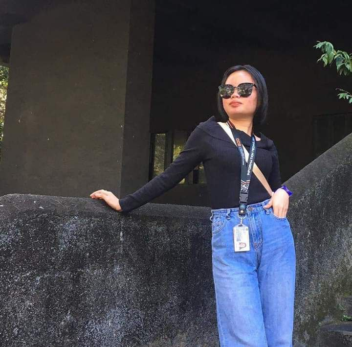

PERSONAL WEBSITES
LOCATION: Brgy. San Gregorio, San Pablo City, Laguna, Philipines
DATE OF BIRTH: November 04, 2004
EMAIL: vivienashleigh19@gmail.com
FACEBOOK: Vivien Virtucio
ELEMENTARY: Don Enrique Bautista Elementary School(2008-2015) Brgy. San Francisco, Calihan San Pablo City, Laguna
JUNIOR HIGH SCHOOL: Dayap National High School(2016-2020)
SENIOR HIGH SCHOOL: Ama Computer College, San Pablo City, Laguna(2021-2022)
DEGREE: Bachelor in Science in Information Technology
UNIVERSITY: Laguna State Polytechnic University, San Pablo Campus
YEAR: 2022-2024
I possess a versatile skill set that enhances my effectiveness as a web developer. Proficient in HTML5, CSS3, and JavaScript, I specialize in crafting responsive and aesthetically pleasing websites. My proficiency extends to utilizing front-end frameworks like React, enabling me to construct dynamic and engaging user interfaces. I also have hands-on experience with version control systems like Git and collaborative tools such as GitHub. With a strong sense of design and a commitment to accessibility, I ensure that the websites I create are not only functional but also inclusive. Vivs, [2/26/2024 9:34 PM] I consistently broaden my skill set, staying updated on emerging technologies and trends in the continually evolving field of web development. My approach to problem-solving, meticulous attention to detail, and unwavering commitment to delivering top-notch results position me as a valuable asset in creating seamless online experiences.
I've engaged in various projects that demonstrate my skills and innovation in web development. One standout project involves crafting a responsive e-commerce site using HTML, CSS, and JavaScript. This project illustrates my capacity to design intuitive interfaces and incorporate advanced features like product filtering and payment processing. Feel free to check out the project [here](https://example.com/ecommerce). Additionally, I've created a portfolio website using React, showcasing my adeptness with front-end frameworks for dynamic and engaging user experiences. This project emphasizes my meticulousness and dedication to delivering top-tier outcomes. Explore my portfolio website [here](https://example.com/portfolio). These endeavors underscore my enthusiasm for web development and my commitment to pushing the boundaries of what can be achieved online.
EMAIL: vivienashleigh@gmail.com
LINKEDIN: linkedin.com/vivienashleigh
GITHUB: github.com/vivienashleigh
PHONE: 09123920364
INSTITUTIONAL EMAIL: 0332-1814@lspu.edu.ph